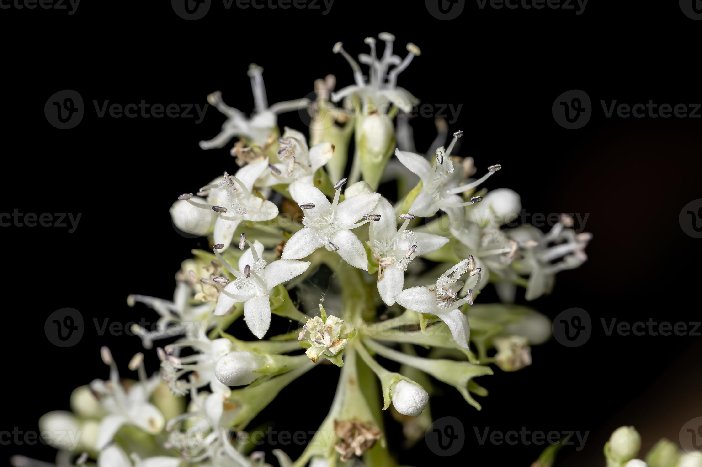

Sur le plan évolutif, les angiospermes (plantes à fleurs) se sont d'abord diversifiées autour de lignées ancestrales proches des dicotylédones, avant que les monocotylédones, puis les graminées, n'émergent au Crétacé.


Bienvenue sur ma page consacrée aux dicotyledones.
Sur le plan évolutif, les angiospermes (plantes à fleurs) se sont d'abord diversifiées autour de lignées ancestrales proches des dicotylédones, avant que les monocotylédones, puis les graminées, n'émergent au Crétacé.
